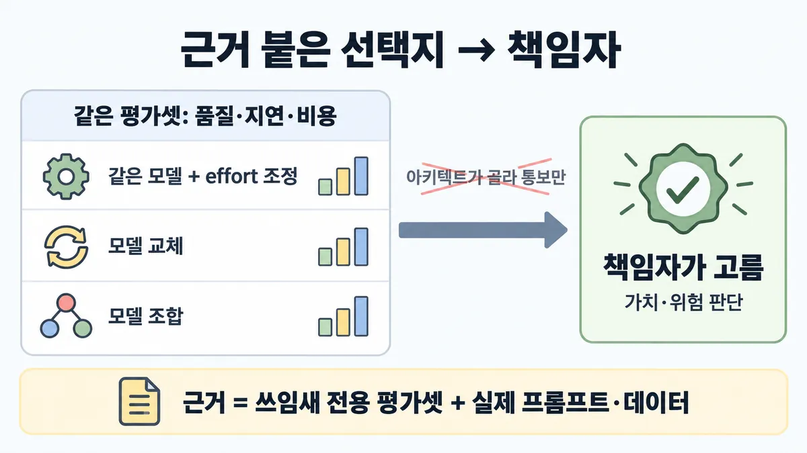
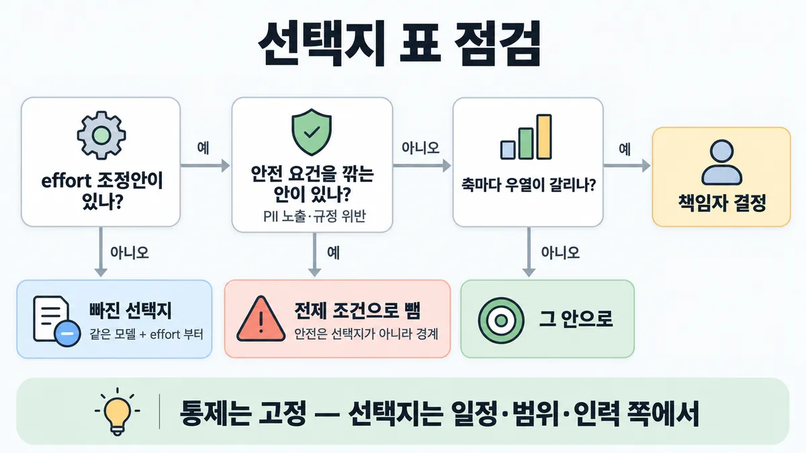
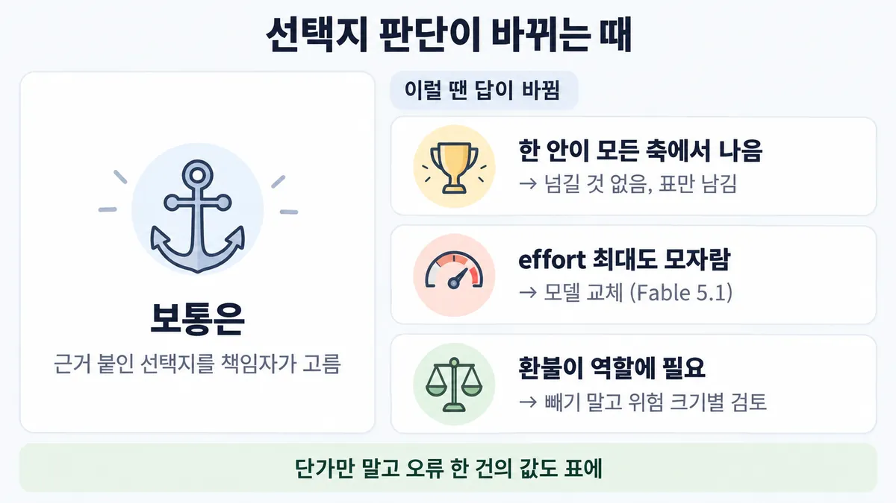

■ trade-off 전달
표시가 없는 문장은 공식 문서에서 확인한 내용이에요. 다른 표시는 읽는 법
왜 배우나 — 시험이 요구하는 것
시험 목표 6.2 결정과 절충 전달 · D6 사람·문서 14%Communicate architectural decisions and trade-offs
이 개념으로 푸는 판단 (할 수 있어야 하는 것)
- 6.2① 실행 가능한 설계가 둘 — 아키텍트가 골라 통보할까, 책임자가 고르게 할까? — 절충 전달 방식 (평가 근거 붙은 선택지 공개 → 책임자 결정)
- 6.2② 상담 에이전트에 환불·계정 삭제 권한까지 달라는 요구 — 확인창을 붙일까, 뺄까? — 큰 자율성 요구의 첫 수 (권한 필요성 확인 → 불필요하면 제거 → 필요하면 위험 비례 통제)
- 2.1② 품질이 조금 모자라거나 비용이 남는다 — 모델을 바꿀까, effort 를 바꿀까? — 조절 수단 순서 (effort → 모델 교체 → 섞인 요청은 모델 조합·라우팅)
- 6.3① "AI 답변이 항상 정확하다고 계약서에 넣어 달라" — 무엇을 약속하나? — 기대치 맞추기 (100% 대신 측정된 SLO + 사람 안전망)
한눈에
실행 가능한 설계가 여럿이면 아키텍트가 조용히 골라 통보하지 않음. 선택지마다 같은 평가셋의 품질·지연(latency)·비용을 붙여 보여 주고, 가치·위험 판단은 책임자(business owner)가 함 업계 일반 공식 문서 없음
근거 만드는 법은 공식 : 쓰임새 전용 평가셋으로 실제 프롬프트·데이터를 돌려 모델끼리 비교하고 성능·비용 trade-off(절충)를 따짐. 좋은 평가셋이 가장 중요한 단계
비유 변경 요청(CAB)에 대안 2~3개 + 벤치마크·롤백 비용을 붙여 올림. 인스턴스 교체안만 있고 튜닝안이 없으면 빠진 선택지


ELI5
이사할 집이 두 곳일 때, 중개인이 몰래 계약하지 않고 표를 보여 주는 거예요.
- 표에는 월세·출근 시간·방 크기가 나란히 적혀 있어요.
- 어느 쪽이 좋은지는 살 사람이 정해요.
- 방 크기만 다른 집 말고, 같은 집을 조금 고쳐 쓰는 방안도 표에 넣어요.
- 불이 나면 못 나가는 집은 아예 표에 안 올려요.
개념 설명
원리
누가 정하나
- "품질 조금 손해 vs 비용 절반" 은 기술 문제가 아니라 사업 판단. 품질 손해가 어떤 고객·매출에 닿는지는 책임자가 더 잘 알고 있음 (업계 일반).
- 아키텍트의 몫 = 선택지를 같은 잣대로 재서 나란히 놓는 것. 조용히 골라 통보하면 책임자는 무엇을 포기했는지 모름.
근거는 같은 평가셋으로
- 공식 순서 : 쓰임새 전용 벤치마크 테스트 → 실제 프롬프트·데이터 → 정확도·품질·엣지 케이스 비교 → 성능·비용 trade-off(절충).
- eval 이 있으면 지연(latency)·토큰·과제당 비용·오류율을 같은 과제 묶음에서 측정 → 선택지끼리 비교가 공정해짐.
선택지 공간은 모델 교체보다 넓음
- effort : 한 모델 안에서 지능 ↔ 지연·비용을 맞바꾸는 lever(조절 수단). 공식은 "모델 바꾸기보다 나은 경우가 많다".
- 모델 조합 : 싼 모델이 대부분을 하고 어려운 것만 프런티어 모델로.
- 모델 교체 : effort 를 끝까지 올려도 모자랄 때.
안전은 선택지 축이 아니라 바닥
- 넘으면 안 되는 선(PII 노출·규정 위반)은 모든 선택지가 먼저 통과해야 할 조건. 그걸 깎는 안은 "싼 선택지"가 아니라 자격 없는 안 (업계 일반).
권한 요구도 같은 틀
- 먼저 필요성 → 필요 없으면 빼기(공식 샘플 1) → 필요하면 위험 크기만큼 통제(control). 위험은 "환각(hallucination)된 환불 = 돈이 나감"처럼 책임자가 아는 말로.
규칙과 판단


갈림길
① 누가 고르나 [6.2①]
그 안으로
한 안이 품질·지연·비용 모두 나으면 고를 게 없음 업계 일반
책임자 결정
선택지마다 같은 평가셋의 품질·지연·비용을 붙여 보여 주고, 가치·위험 판단은 책임자 업계 일반
혼자 골라 통보로 끝내지 않음
아키텍트가 조용히 골라 통보만 하지 않음 업계 일반
맡기지 않음
설계 판단을 모델에게 맡기지 않음 업계 일반
②③ 선택지 점검 [6.2①] [2.1②]
빠진 선택지
같은 모델 + effort 조정안부터. effort 조정이 모델 교체보다 나은 경우가 많음
전제 조건으로 뺌
선택지 사이 trade-off 가 아니라 모든 선택지의 전제 조건 · 선택지는 일정·범위·인력 쪽에서 업계 일반
다음 물음 — 축마다 우열이 갈리나?
④ 더 큰 권한 요구 [6.2②]
빼기
필요 없으면 도구 자체를 뺌 → ■ 최소 권한
위험 등급별
위험 등급을 여러 개 두면 통제(control) 강도를 조절 → ■ moderation 위험 등급 · 위험은 비즈니스 결과로 바꿔 말함 업계 일반
규칙 원문 ①②③④ (갈림길로 그린 규칙)
-
근거 붙은 선택지 → 책임자 결정 : 선택지마다 같은 평가셋의 품질·지연·비용을 붙여 보여 주고, 가치·위험 판단은 책임자 업계 일반 공식 문서 없음 [6.2①]
한 안이 품질·지연·비용 모두 나으면 고를 게 없음 업계 일반 · 설계 판단을 모델에게 맡기지 않음 업계 일반
근거 만드는 법(공식) : 쓰임새 전용 벤치마크 테스트 → 실제 프롬프트·데이터로 → 정확도·품질·엣지 케이스를 모델끼리 비교 → 성능·비용 trade-off. 모델 선택 = 비용·정확도·응답 시간 사이의 trade-off (고객지원 가이드)
eval 이 있으면 지연·토큰·과제당 비용·오류율을 고정 과제 묶음으로 추적 · eval 은 제품팀과 연구팀 사이 가장 넓은 소통 창구 → trade-off 를 전하는 공통 언어로 씀 (해석)
지연은 평균 말고 백분위(P95 등)로 업계 일반 받은 공식 문서에 백분위 문장 없음
-
선택지 구성 : 같은 모델 + effort 조정안부터. effort = 한 모델 안에서 지능 ↔ 지연·비용을 맞바꿈. effort 조정이 모델 교체보다 나은 경우가 많음 · 자기 eval 로 effort 를 훑어 봄(sweep) → ■ 지연 줄이기 lever [6.2①] [2.1②]
세 번째 모양 = 모델 조합 : 싼 모델 + 프런티어 모델 (실행자가 어려운 결정만 어드바이저로 · orchestrator 가 대량 작업을 싼 worker 에게) — 목록 6.2① 의 선택지 B(Sonnet + 라우팅)가 이 모양
effort 를
xhigh·max까지 올려도 eval 이 모자라면 그때 모델 교체(Fable 5.1)가격 : Sonnet 5 $2/$10 = Opus 5.5 $4/$20 의 50% (2026-09-28 조회 · Opus 5.5 = 2026-09-22 출시, 시험 뒤 변경) · 목록의 "비용 40%" 는 Opus 5 $5/$25 대비
-
안전은 경계 : PII 노출·규정 위반처럼 넘으면 안 되는 선은 선택지 사이 trade-off 가 아니라 모든 선택지의 전제 조건 업계 일반 [6.2①]
일정·대기열 압박에서 통제(사람 승인 · 추가 통제)를 빼거나 미루자는 요구 → 통제는 고정, 선택지는 일정·범위·인력 쪽에서 : 연기 · 범위 축소 · 기간 연장 · 위험별 분류(triage)·인력 · 정책 책임자가 명시적으로 승인한 정책 변경 업계 일반. 통제를 프롬프트 지시로 대신하는 것도 빼기와 같음 — CLAUDE.md 지시는 권고, hook 은 결정적(deterministic)이고 반드시 실행
가이드는 "보안 trade-off" 를 연습 주제로 듦 — 요건 안쪽의 설정 차이(예 거주지 요구가 없을 때
us1.1배 vsglobal)는 선택지, 요건을 깎는 안은 선택지가 아님 (해석) -
더 큰 권한 요구 (영업팀 "알아서 환불까지") : 먼저 역할에 정말 필요한지. 필요 없으면 도구 자체를 뺌 — 확인창·로그는 한 단계 약한 보완 통제 → ■ 최소 권한 [6.2②]
필요하면 위험 등급별 : 위험 등급을 여러 개 두면 통제 강도를 조절 — 높은 위험은 자동 차단, 중간 위험이 쌓이면 사람 검토 (콘텐츠 moderation 문맥 — 권한으로 넓힌 건 해석) → ■ moderation 위험 등급 · ■ human-in-the-loop 게이트 위치
위험은 비즈니스 결과로 번역 : "사람 검토 없으면 환각(hallucination)된 환불 = 직접 금전 손실" 업계 일반. 가장 앞선 모델도 사실과 다른 글을 낼 수 있음
더 깊이 : 판단 규칙 · 상황 변수 (설명)
판단 규칙
| 조건 | 답 | 등급 | 근거 |
|---|---|---|---|
| 실행 가능한 설계가 둘 이상, 축마다 우열이 갈림 | 선택지마다 같은 평가셋의 품질·지연·비용을 붙여 보여 주고 책임자가 결정 | 업계 일반 | 공식 문장 없음 |
| 선택지 근거를 무엇으로 | 쓰임새 전용 평가셋 + 실제 프롬프트·데이터 → 정확도·품질·엣지 케이스 → 성능·비용 trade-off | choosing-a-model | |
| 선택지가 모델 교체뿐 | 같은 모델 + effort 조정안을 넣음 | choosing-a-model "Tuning effort is often a better lever than switching models." | |
effort 를 xhigh·max 까지 올려도 eval 모자람 | 그때 모델 교체(Fable 5.1) | choosing-a-model | |
| 싼 모델 + 비싼 모델을 같이 | 모델 조합(실행자-어드바이저 · orchestrator-worker)도 선택지 | choosing-a-model | |
| 한 안이 안전 요건을 깎음 | 선택지에서 뺌 (경계) | 업계 일반 | — |
| 필요 없는 권한 요구 | 도구 자체를 뺌 | 가이드 샘플 1 정답 B | |
| 필요한 강한 권한 | 위험 등급별 통제(고위험(high-risk) 자동 차단 · 중위험 누적 → 사람) | content-moderation en-full (moderation 문맥 — 권한으로 넓힌 건 해석) |
상황 변수
| 변수 | 값 | 답 쪽 | 등급 | 근거 |
|---|---|---|---|---|
| 우열 | 한 안이 모든 축에서 나음 | 그 안으로 (고를 게 없음) | 업계 일반 | 뒤집히는 때 2 |
| 우열 | 품질 vs 비용이 갈림 | 책임자 결정 | 업계 일반 | 판단 규칙 1 |
| 오류 한 건의 값 | 큼 (사람 수습·금전 손실) | 비싼·강한 안 쪽 | 계산 | 뒤집히는 때 1 |
| 오류 한 건의 값 | 작음 · 트래픽 큼 | 싼 안·effort 낮추기 쪽 | 계산 | 뒤집히는 때 1 |
| 품질 부족 원인 | thinking(사고) 양 부족 | effort 올리기 먼저 | choosing-a-model | |
| 모델 세대 | Sonnet 5 로 옮김 | 같은 글이 토큰 약 30% 더 → 단가 비교에 반영 | 릴리스 노트 | |
| 모델 세대 | Opus 5.5 로 옮김 | 기본 effort = medium → 이전 설정 옮기지 말고 eval 로 다시 훑기 | effort · 시험 뒤 변경(2026-09-22) | |
| 요청 내용 | PII 노출이 늘어나는 안 | 선택지 아님 | 업계 일반 | 판단 규칙 6 |
| 권한 | 역할에 안 쓰임 | 빼기 | 샘플 1 |
연습 문제
고객지원 Agent 비용을 줄이려고 아키텍트가 책임자에게 올릴 선택지 표를 만든다. 표에는 "Opus 5.5 유지" 와 "Sonnet 5 로 교체" 두 줄뿐교체안만이다. 팀은 "Sonnet 5 가 절반 값이니 그걸로 통보하자"고 한다. 표에서 먼저 고칠 것은?
시험 대비
함정
- 비싼 쪽이나 싼 쪽을 조용히 골라 기정사실로 통보 → 근거 붙여 책임자가 업계 일반
- "어느 설계가 나은지 모델에게 판단을 맡긴다" → 설계 판단을 모델에게 맡기지 않음 업계 일반 목록 오답
- 선택지를 모델 교체로만 구성 → effort 조정안 누락
- 공개 벤치마크 순위·감으로 비교 → 쓰임새 전용 평가셋 + 실제 프롬프트·데이터
- "위험을 알리고, 도구는 둔 채 실행 전 확인 단계" → 필요 없는 권한이면 빼기가 먼저 (가이드 샘플 문항 1 의 보기 C 와 같은 모양)
- "PII 노출이 조금 늘지만 절반 값" 을 선택지로 올림 → 안전은 선택지가 아니라 경계 업계 일반
- "일정을 지키려고 통제는 출시 뒤에 · 평가를 줄여서 · 승인 관문을 잠시 빼고 · 프롬프트 지시로 임시 통제" → 통제는 고정, 선택지는 연기·범위 축소·기간 연장·인력·승인된 정책 변경 업계 일반 · 프롬프트 지시는 권고
- 반대 함정 : "확인창·사람 검토 보기는 항상 오답" → 필요해서 남긴 강한 권한엔 위험 등급별 사람 검토 (■ 최소 권한 · 규칙 ⑤)
신호
"Tuning effort is often a better lever than switching models."
"specific to your use case - having a good evaluation set is the most important step in the process."
"Weigh performance and cost tradeoffs."
"The choice of model depends on the trade-offs between cost, accuracy, and response time."
"Evals can also become the highest-bandwidth communication channel between product and research teams, defining metrics researchers can optimize against."
"Least privilege means removing capabilities the role does not require, eliminating the attack surface rather than monitoring or guarding it." (가이드 샘플 1)
"Creating multiple risk levels allows you to adjust the aggressiveness of your moderation."
"Practice architectural decision-making: model selection, integration protocols, and security trade-offs" (가이드 7절 — 원문 줄바꿈 이어 붙임)


더 깊이 : 뒤집히는 때 · 오답 재료 (설명)
뒤집히는 때
1. 싼 안이 오히려 비싼 때
- 조건 : A = Opus 5.5, B = Sonnet 5. 평가셋에서 B 의 오류율이 1.5%p 높음. 오류 한 건을 사람이 수습하는 값 $5.
- 계산 : 건당 입력 6천 · 출력 800 토큰, 월 2만 건.
- A : 6,000 × $4 + 800 × $20 (백만 토큰당) = $0.040 / 건 → 월 $800.
- B : 6,000 × $2 + 800 × $10 = $0.020 / 건 → 월 $400. 새 토크나이저로 토큰 약 30% 더면 $0.026 → 월 $520.
- B 의 추가 오류 : 20,000 × 1.5% × $5 = 월 $1,500.
-
총 : A $800 vs B $1,900~$2,020 → A 가 쌈. 손익 = 오류율 차이 0.4~0.52%p.
-
전제 : Opus 5.5 토큰 수는 옛 기준과 같다고 가정 · 캐싱·배치 없음 · 수습 값 $5 는 가정 · 가격 = 2026-09-28 조회값.
- 등급 : 계산 (가격·30% 는 확인)
- 근거 : prompt-caching 표 · 릴리스 노트
- 판단 : 그래서 선택지 표에 단가만 적으면 안 되고 "오류 한 건의 값"을 책임자에게서 받아 같이 적어야 함. 이 값은 사업 쪽만 알고 있음 → 책임자가 정해야 하는 이유.
2. 책임자에게 넘길 필요가 없는 때
- 조건 : 한 안이 품질·지연·비용 모두 나음(다른 안이 모든 축에서 뒤짐).
- 판단 : 가치 판단이 안 갈리니 고를 게 없음. 표만 남기고 진행.
- 등급 : 업계 일반
3. effort 로 안 되는 때
- 조건 : 같은 모델에서 effort 를
xhigh·max까지 올렸는데 까다로운 추론(reasoning)·긴 에이전트 작업의 eval 이 여전히 모자람. - 판단 : 이때는 모델 교체(Fable 5.1)가 맞는 선택지. "항상 effort 먼저, 모델 교체는 오답" 은 반대 함정.
- 근거 : choosing-a-model
4. 확인창이 정답인 때
- 조건 : "알아서 환불까지" 가 사업상 정말 필요(역할에 환불이 들어감).
- 판단 : 빼기가 아니라 위험 크기에 맞춘 통제 — 큰 금액·드문 경우는 사람 검토, 작은 것은 자동. 샘플 1 이 "빼기"인 건 역할에 필요 없었기 때문.
- 등급 : (위험 등급 원리는 moderation(유해 콘텐츠 검토) 문맥) + 업계 일반(권한에 적용)
- 근거 : content-moderation en-full · 샘플 1 → ■ moderation 위험 등급 · ■ human-in-the-loop 게이트 위치
오답 재료
| 오답 | 왜 끌리나 | 왜 틀리나 | 등급 | 근거 |
|---|---|---|---|---|
| 비싼 쪽(또는 싼 쪽)을 골라 기정사실로 통보 | 전문가가 알아서 정하는 게 빨라 보임 | 가치·위험 판단은 책임자. 무엇을 포기했는지 보여야 함 | 업계 일반 | — |
| "어느 설계가 나은지 모델에게 판단을 맡긴다" | AI 시스템이니 AI 에게 | 설계 판단을 모델에게 맡기지 않음. 근거는 평가셋 수치 | 업계 일반 | 목록 6.2① 오답 |
| 선택지를 Opus vs Sonnet 교체로만 구성 | 모델이 제일 큰 lever 같음 | effort 조정이 모델 교체보다 나은 경우가 많음 | choosing-a-model | |
| 공개 벤치마크 순위로 비교 | 객관적 숫자 같음 | 쓰임새 전용 평가셋 + 실제 프롬프트·데이터 | choosing-a-model | |
| "위험을 알리고, 도구는 둔 채 실행 전 확인 단계" | 위험도 알리고 기능도 줌 | 필요 없는 권한이면 빼기가 먼저. 확인창은 보완 통제 | 가이드 샘플 1 해설 | |
| "PII 노출이 조금 늘지만 절반 값" 을 선택지로 | trade-off 를 투명하게 보여 주는 것 같음 | 안전 요건은 trade-off 축이 아니라 바닥 | 업계 일반 | — |
| "Opus 가 약 2배, Sonnet 은 품질 2% 이내·비용 40%" 를 사실로 | 구체 숫자라 믿음이 감 | 가상 수치. 조회값은 Sonnet 5 = Opus 5.5 의 50%(Opus 5 대비 40%) | prompt-caching 표 | |
| 반대 함정 : "확인창 보기는 항상 오답" | 샘플 1 을 외움 | 필요해서 남긴 강한 권한엔 위험 등급별 사람 검토 | 뒤집히는 때 4 |
참고
출처
- 가이드 목표 6.2 공식 시험 가이드 v1.0
- 가이드 7절
- 샘플 1
- choosing-a-model
- effort
- customer-support-chat
- demystifying-evals
- content-moderation
- reduce-hallucinations
- prompt-caching ( 표)
- 릴리스 노트
- Claude Code best-practices
상태
- 업계 일반 7줄(책임자 결정 · 우세안 · 모델에게 안 맡김 · 백분위 · 안전 경계 · 압박 때 선택지 · 비즈니스 번역)
- 시험 뒤 변경 1곳(Opus 5.5 가격)
미해결
- "근거 붙은 선택지를 공개하고 책임자가 결정" 이라는 공식 문장은 못 찾음 — 이 카드의 중심 규칙이 업계 일반. 시험 키가 이 상식을 쓰는지는 모름.
- 백분위 지연(P95 등) :
ccarp/raw/official-docs/전체에서grep -i "percentile\|p95\|p99"0건 (제외 = 받지 않은 문서) → 업계 일반으로 둠. - 가이드 7절은 "security trade-offs" 를 연습 주제로 듦. "안전은 경계" 와 긴장 — 요건 안쪽 설정 차이는 trade-off, 요건 자체는 경계로 나눴지만 이 구분은 해석.
- 목록 6.2① 의 "Opus 약 2배 · Sonnet 품질 2% 이내·비용 40%" 는 공식 근거 없음(목록도 가상 수치로 표시). 가격만 조회값으로 고침.
- 목록 6.2② 의 영어 신호 3개는 원문에서 모두 찾음(샘플 1 · content-moderation en-full). 단 "위험 등급" 문장은 moderation 문맥이라 권한 통제에 쓰는 건 해석.
- Skilljar 는 이번에 보지 않음 — 받아 둔 Skilljar 30개 파일 제목 중 trade-off 전달 주제 없음(
ls ccarp/raw/skilljar· 제외 = 받지 않은 과정·강의).